Site redesign mockups
Desktop and mobile design proposals, not implemented site pages. Compare A’s warm editorial typography with B’s grid, diagrams, and technical structure. Click any image to inspect it at full size.
Bold editorial · Mobile v2
Revised home hero and roomier article. Both shown at up to 390px wide. The generator retained a short canvas, so the lower homepage is still more compressed than requested; final implementation should be longer rather than copy its spacing literally.


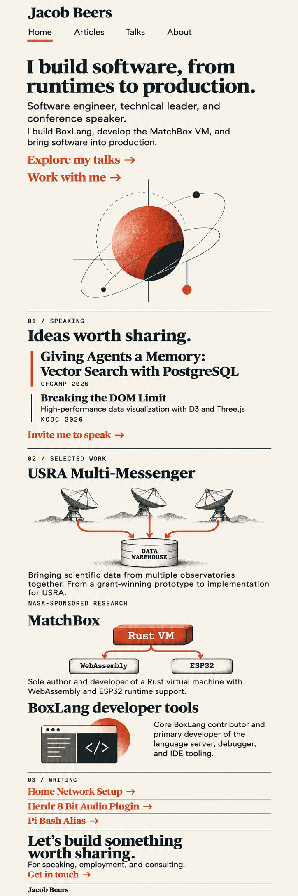


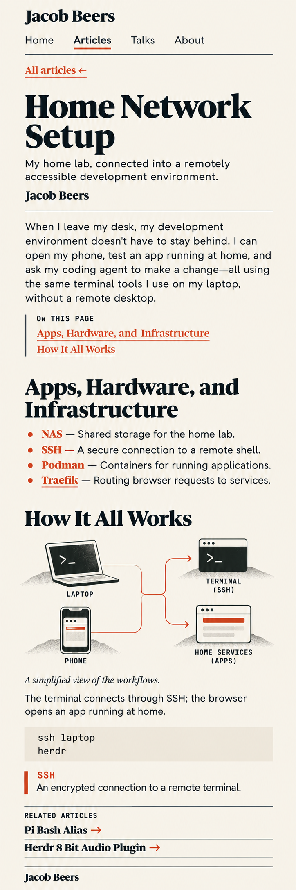
Bold editorial · Mobile
Home and abbreviated article-detail design studies. Shown at up to 390px wide to approximate phone viewing. Actual font sizes, touch targets, and responsive behavior still need browser validation; the article study is more compact than intended.
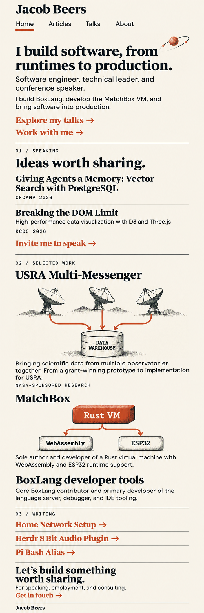
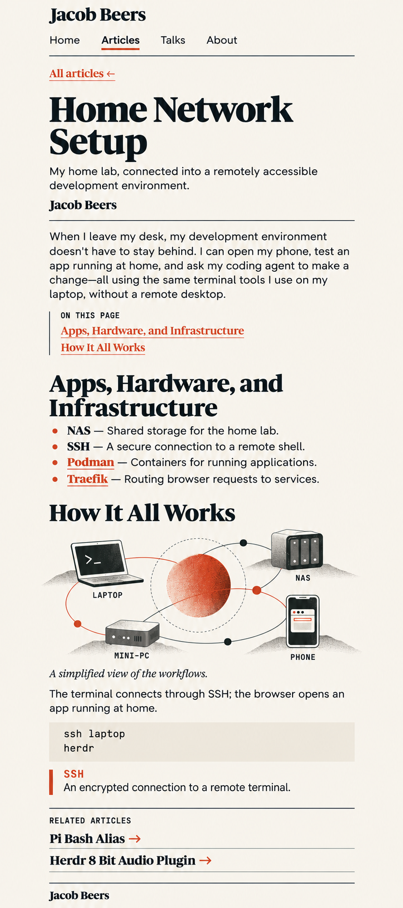
Bold editorial · Revisions
Originals on the left, revised versions on the right. About adds explanatory project graphics; Talks adds aligned appearance metadata and explicit resource links.
About / Work with me

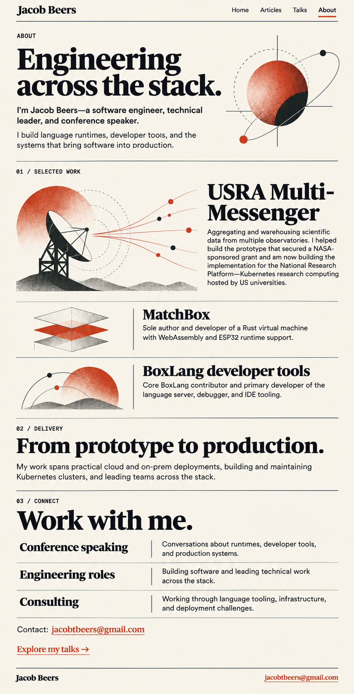

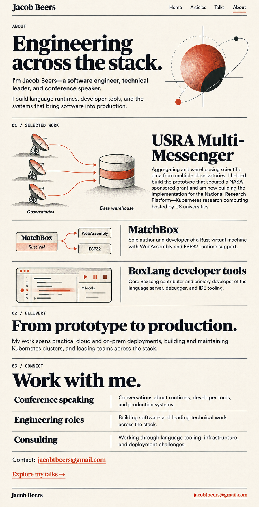
Talks

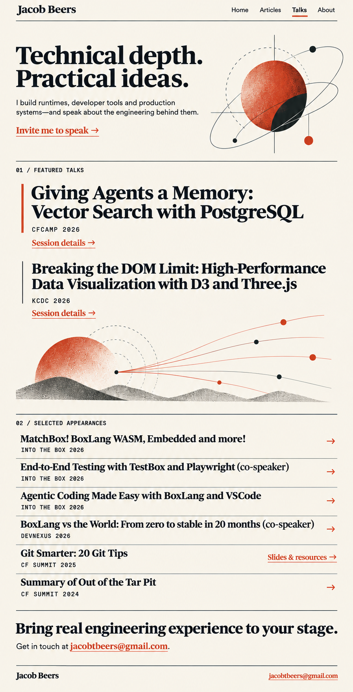

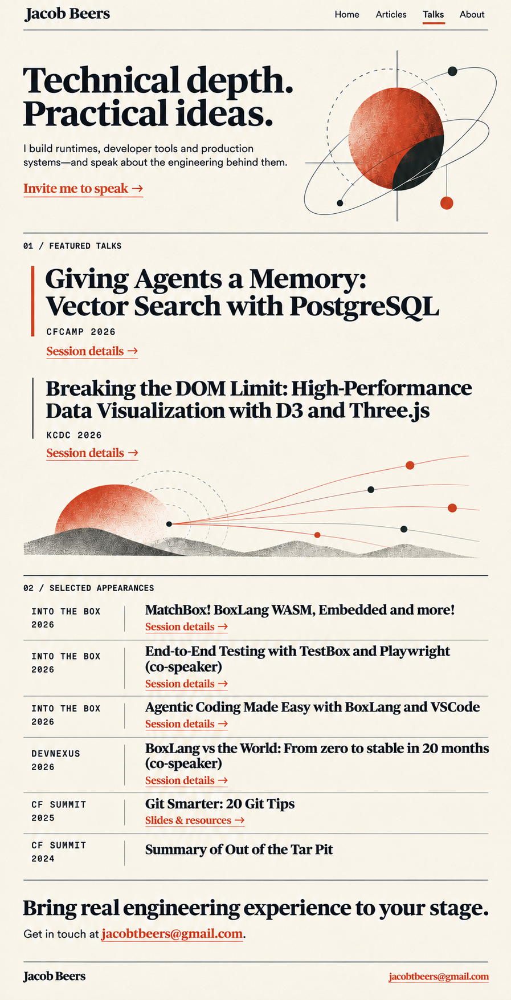
Home

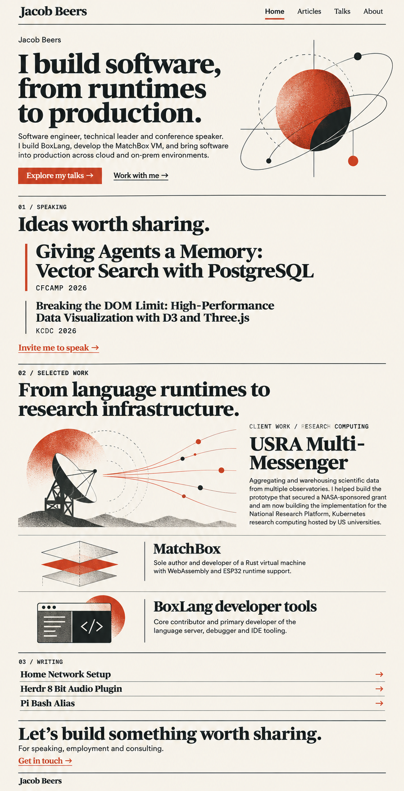

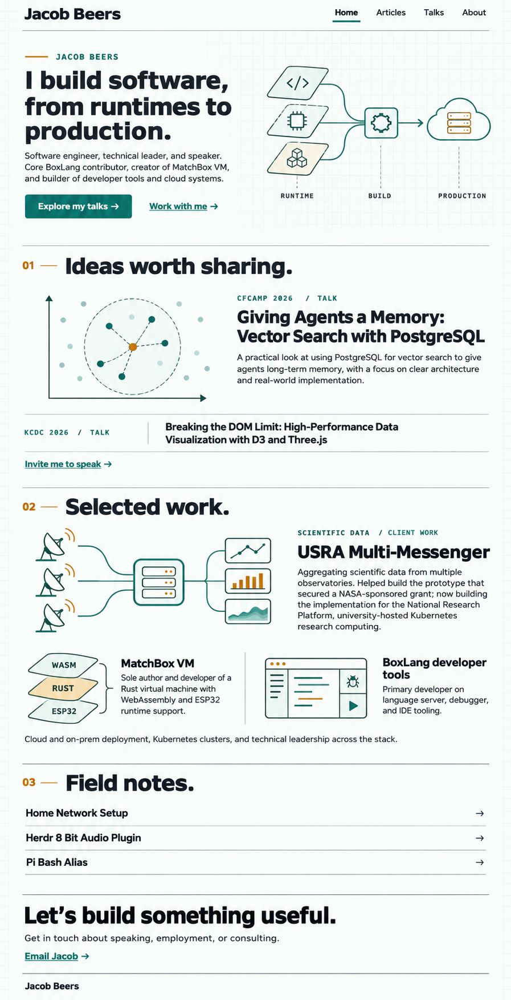
Articles index

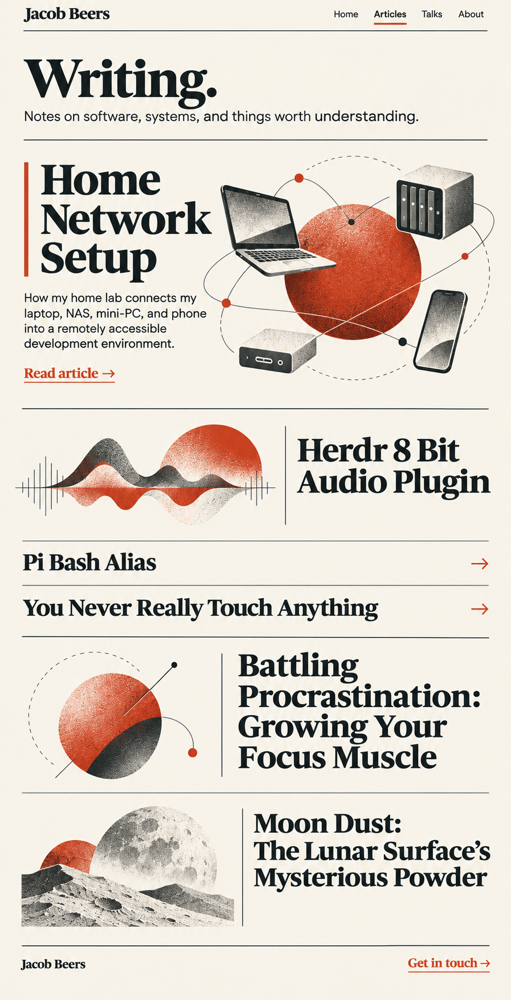

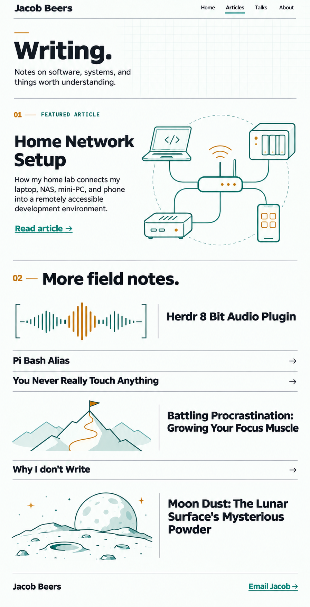
Article detail

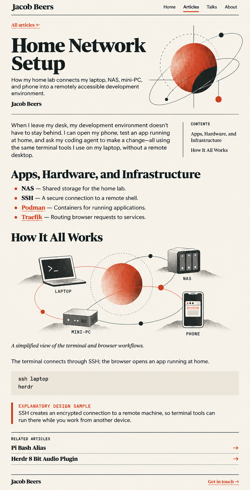

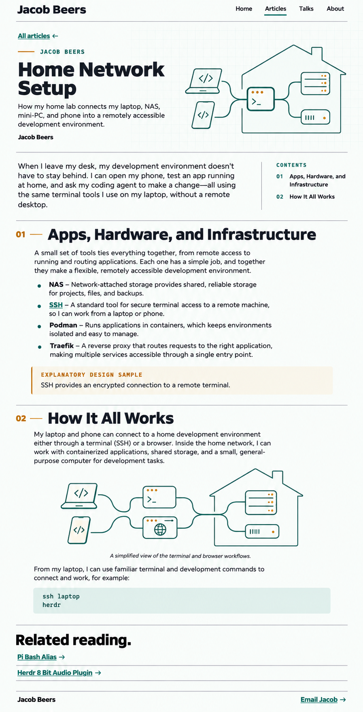
About / Work with me

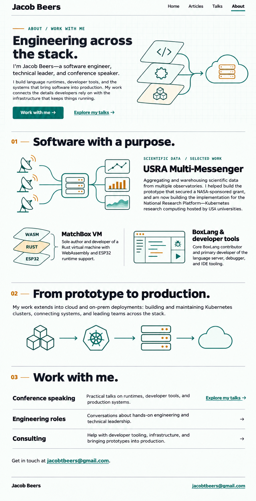
Talks

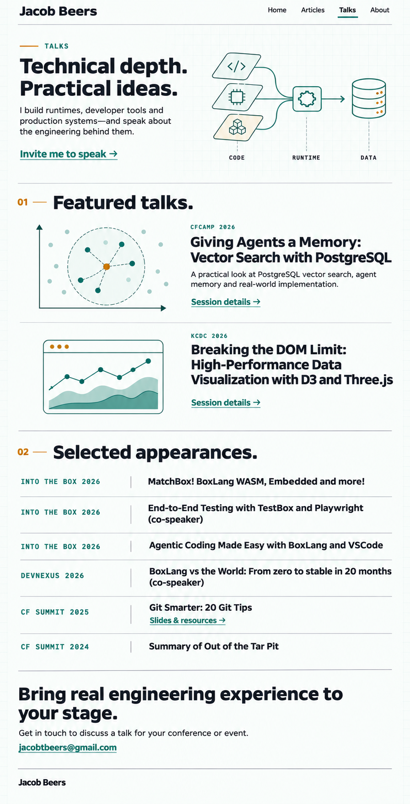